<title>Chimney Tops 2 ELMFIRE Hindcast</title>
<link rel="preconnect" href="https://fonts.googleapis.com">
<link rel="stylesheet" href="https://fonts.googleapis.com/css2?family=IBM+Plex+Sans+Condensed:wght@500;600;700&family=Source+Sans+3:ital,wght@0,400;0,600;1,400&family=IBM+Plex+Mono:wght@400;500&display=swap">
<style>
/* Layout: single reading column (~72ch) with wide figure rows that break out to 1100px; findings first, detail after */
:root{
  --bg:#f5f4f0; --surface:#ffffff; --ink:#1f2320; --muted:#5d645f; --line:#d9dbd4;
  --ember:#b3470f; --ember-soft:#f8e3d6; --smoke:#2f5e86; --smoke-soft:#e0eaf3; --moss:#2e6b3c; --moss-soft:#e1efe3;
  --code:#ecebe5;
  --display:"IBM Plex Sans Condensed","Arial Narrow",system-ui,sans-serif;
  --body:"Source Sans 3","Segoe UI",system-ui,sans-serif;
  --mono:"IBM Plex Mono",ui-monospace,Consolas,monospace;
}
@media (prefers-color-scheme:dark){:root:not([data-theme="light"]){
  --bg:#151816; --surface:#1d211f; --ink:#e6e8e3; --muted:#9ea69f; --line:#343a36;
  --ember:#ef8a55; --ember-soft:#3a251a; --smoke:#86b6de; --smoke-soft:#1b2a37; --moss:#83bd95; --moss-soft:#1f3026; --code:#262b28; color-scheme:dark}}
:root[data-theme="dark"]{
  --bg:#151816; --surface:#1d211f; --ink:#e6e8e3; --muted:#9ea69f; --line:#343a36;
  --ember:#ef8a55; --ember-soft:#3a251a; --smoke:#86b6de; --smoke-soft:#1b2a37; --moss:#83bd95; --moss-soft:#1f3026; --code:#262b28; color-scheme:dark}
*{box-sizing:border-box}
body{background:var(--bg);color:var(--ink);font:17px/1.6 var(--body);padding-inline:16px;padding-block:40px 72px}
.col{max-width:760px;margin-inline:auto}
.wide{max-width:1100px;margin-inline:auto}
h1,h2,h3{font-family:var(--display);text-wrap:balance;line-height:1.15;margin:0}
h1{font-size:2.4rem;font-weight:700}
h2{font-size:1.6rem;font-weight:600;margin-top:56px;padding-top:18px;border-top:1px solid var(--line)}
h3{font-size:1.15rem;font-weight:600;margin-top:28px}
p{margin:12px 0}
.eyebrow{font:600 .78rem/1 var(--mono);letter-spacing:.08em;text-transform:uppercase;color:var(--ember)}
.lede{font-size:1.15rem;color:var(--muted);margin-top:14px}
.meta{font:.85rem var(--mono);color:var(--muted);margin-top:10px}
code{font:.86em var(--mono);background:var(--code);padding:1px 5px;border-radius:4px}
.key{background:var(--ember-soft);border-left:4px solid var(--ember);padding:14px 20px;margin-top:28px;border-radius:0 6px 6px 0}
.key h3{margin:0 0 6px;color:var(--ember)}
.key ol{margin:6px 0 0;padding-left:22px}
.key li{margin:6px 0}
.note{background:var(--smoke-soft);border-left:4px solid var(--smoke);padding:10px 16px;border-radius:0 6px 6px 0;font-size:.95rem}
.fix{background:var(--moss-soft);border-left:4px solid var(--moss);padding:10px 16px;border-radius:0 6px 6px 0;font-size:.95rem}
.tbl{overflow-x:auto;margin:16px 0}
table{border-collapse:collapse;width:100%;font-size:.92rem;font-variant-numeric:tabular-nums;background:var(--surface)}
th,td{padding:7px 10px;border-bottom:1px solid var(--line);text-align:left;vertical-align:top}
th{font:600 .8rem var(--display);letter-spacing:.03em;text-transform:uppercase;color:var(--muted);background:var(--bg)}
td.n,th.n{text-align:right}
tr.obs td{font-weight:600;background:var(--smoke-soft)}
tr.best td{background:var(--ember-soft)}
.pending{color:var(--muted);font-style:italic}
figure{margin:20px 0}
figure img{display:block;width:100%;height:auto;border:1px solid var(--line);border-radius:4px;background:#fff}
figcaption{font-size:.88rem;color:var(--muted);margin-top:6px}
.maps{display:grid;grid-template-columns:repeat(auto-fit,minmax(230px,1fr));gap:16px;align-items:start}
.maps figure{margin:0}
.maps figcaption strong{color:var(--ink)}
ul.files{font:.84rem/1.7 var(--mono);padding-left:18px;overflow-wrap:anywhere}
footer{margin-top:56px;font-size:.85rem;color:var(--muted)}
a{color:var(--smoke)}
</style>

<header class="col">
  <div class="eyebrow">ELMFIRE hindcast · Great Smoky Mountains, Tennessee</div>
  <h1>Chimney Tops 2 Fire, November 2016</h1>
  <p class="lede">Simulating the fire that burned into Gatlinburg with ELMFIRE 1.1, LANDFIRE fuels and CloudFire historical weather, and comparing the result with the MTBS burned-area perimeter.</p>
  <p class="meta">Work log summary · 30 Sep 2026 · all runs in <code>~/elmfire-1/my_analysis/</code></p>

  <div class="key">
    <h3>Main findings</h3>
    <ol>
      <li>Best match so far: start Sun 27 Nov 13:00 EST, spotting on, spread-rate multiplier <code>adj = 4</code>. Burned area matches MTBS (15,766 vs 15,002 ac) but only about half of it overlaps (Sørensen 0.48).</li>
      <li>The shape is wrong: the model fire spreads too far south, east and uphill on the ridges, and not far enough north into the Gatlinburg valley.</li>
      <li>Slope vs wind test: with slope removed, the fire runs the right way (NNW) but only 4.7 km instead of 13.9 km. Slope causes the wrong-direction spread; the wind input is too weak to carry the fire north.</li>
      <li>Starting at the real ignition (23 Nov) does not work: without firefighting or smouldering in the model, the fire passes 15,000 ac on 26–27 Nov, before the wind event.</li>
      <li>CloudFire weather is NOAA RTMA (2.5 km, hourly, no gusts). Against the Indian Grave station its fuel moisture is too wet; a station-based correction helped only slightly.</li>
    </ol>
  </div>
</header>

<main>
<section class="col">
  <h2>The fire and the setup</h2>
  <div class="tbl"><table>
    <tr><th>Item</th><th>Value</th><th>Source</th></tr>
    <tr><td>Origin</td><td>Chimney Tops, 35.629 N, 83.478 W (MTBS point 35.631 N, 83.478 W)</td><td>NPS, Wikipedia, MTBS</td></tr>
    <tr><td>Reported</td><td>Wed 23 Nov 2016, about 17:20–17:30 EST (22:20–22:30 UTC)</td><td>NPS</td></tr>
    <tr><td>Key event</td><td>Mon 28 Nov: wind rose to 40–50 mph sustained, gusts reported to 87 mph (Cove Mountain); fire entered Gatlinburg that evening; rain from about 21:00 EST</td><td>NPS, Wildfire Today</td></tr>
    <tr><td>Observed burned area</td><td>15,003 ac inside the MTBS burn boundary (fire active until 22 Dec)</td><td>MTBS</td></tr>
    <tr><td>Fuels, terrain</td><td>LANDFIRE 1.4.0 (about 2014, before the fire), 30 m, 40 × 40 km domain</td><td>CloudFire download</td></tr>
    <tr><td>Weather</td><td>Hourly wind, direction, dead fuel moisture; 600 m grid</td><td>CloudFire (NOAA RTMA)</td></tr>
    <tr><td>Fuels in the burned area</td><td>53 % TL6, 34 % TL2 (hardwood litter), 8 % urban non-burnable (Gatlinburg)</td><td>LANDFIRE inside MTBS</td></tr>
    <tr><td>Spotting</td><td>Tutorial 05 settings, <code>EMBER_SAMPLING_FACTOR = 2000</code> (fewer tracked embers, same total flux)</td><td><code>spotting.in</code></td></tr>
  </table></div>
</section>

<section class="wide">
  <div class="col"><h2>Where the weather comes from</h2>
  <p>CloudFire's historical weather is NOAA's Real-Time Mesoscale Analysis (RTMA): an hourly 2.5 km analysis that blends a weather model with station observations. CloudFire resamples it to 600 m and computes dead fuel moisture with the NFDRS4 models. Live fuel moisture is fixed at 30 % and 60 %. This is from the PyroStack dataset paper (co-authored by CloudFire); neither the ELMFIRE guide nor the download script names the source.</p></div>
  <figure>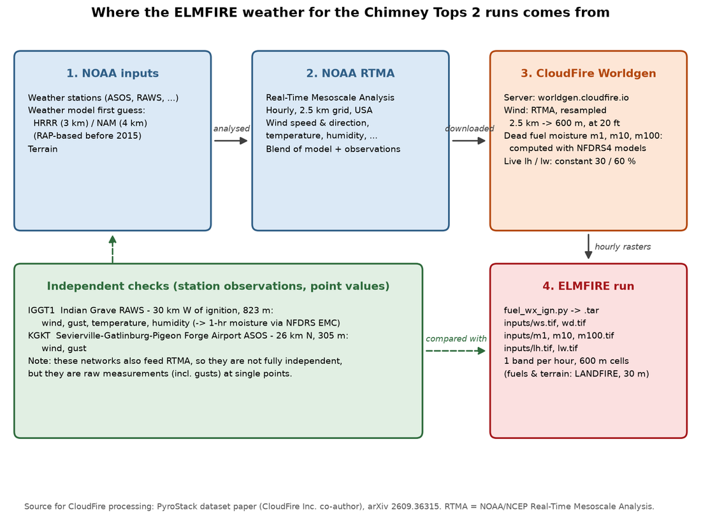<figcaption>Data chain from NOAA to the ELMFIRE input rasters, and the stations used to check it.</figcaption></figure>
</section>

<section class="wide">
  <div class="col"><h2>Checking the weather against stations</h2>
  <p>Two stations had usable 2016 data: Indian Grave RAWS (IGGT1) and the Sevierville–Gatlinburg–Pigeon Forge airport (KGKT). Cove Mountain, which recorded the 87 mph gust, only has data in Synoptic from 2019.</p></div>
  <figure>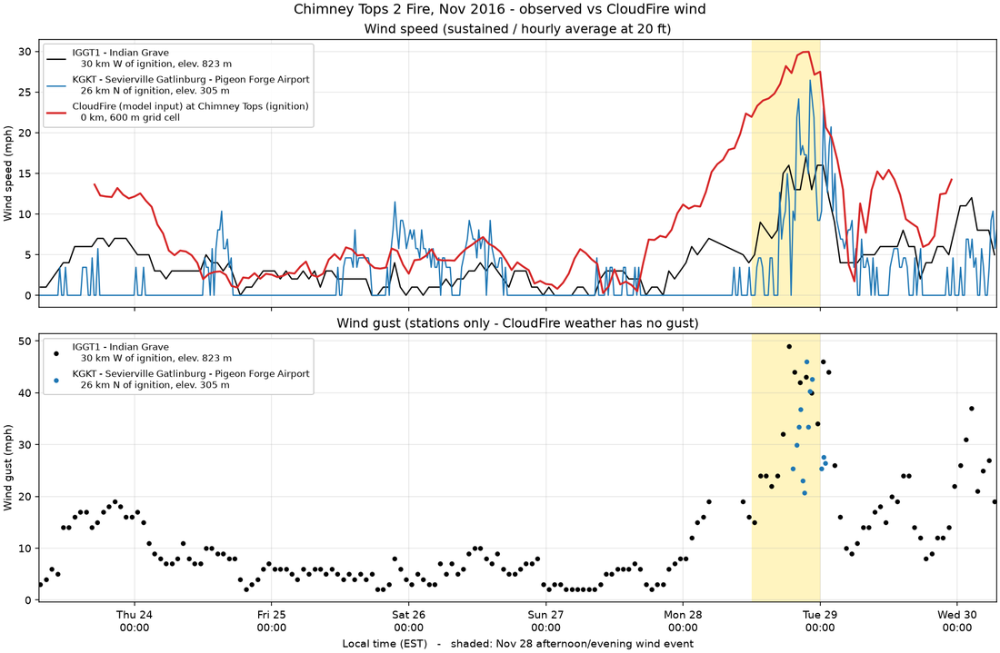<figcaption>Top: wind speed at the two stations and CloudFire at the ignition point. Bottom: gusts (stations only; CloudFire has no gust).</figcaption></figure>
  <div class="col">
  <div class="tbl"><table>
    <tr><th>Station</th><th>From ignition</th><th class="n">Max wind</th><th class="n">Max gust</th></tr>
    <tr><td>IGGT1 Indian Grave (RAWS, 823 m)</td><td>30 km W</td><td class="n">17.0 mph</td><td class="n">49.0 mph</td></tr>
    <tr><td>KGKT Sevierville airport (ASOS, 305 m)</td><td>26 km N</td><td class="n">26.5 mph</td><td class="n">46.0 mph</td></tr>
    <tr><td>CloudFire at Chimney Tops</td><td>0 km</td><td class="n">29.9 mph</td><td class="n">none</td></tr>
  </table></div>
  </div>
  <figure>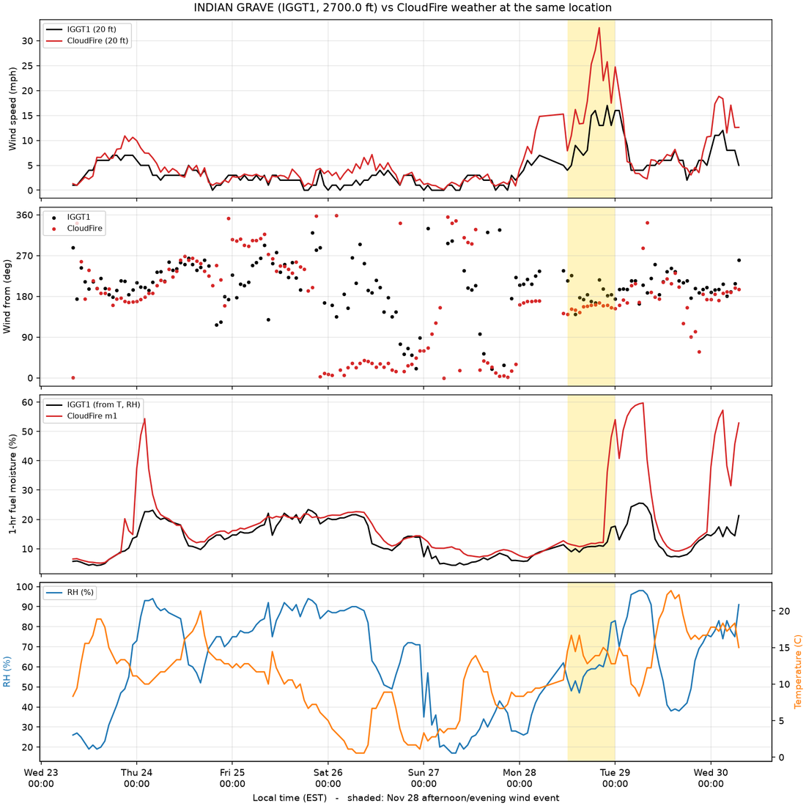<figcaption>Indian Grave vs CloudFire at the same location. Station 1-hr moisture is estimated from temperature and humidity (NFDRS equilibrium moisture).</figcaption></figure>
  <div class="col"><div class="tbl"><table>
    <tr><th>At Indian Grave</th><th class="n">Station</th><th class="n">CloudFire</th></tr>
    <tr><td>Wind, 28 Nov 12–24 EST (mean)</td><td class="n">10.7 mph</td><td class="n">19.2 mph</td></tr>
    <tr><td>1-hr fuel moisture, whole period (mean)</td><td class="n">13.1 %</td><td class="n">18.8 %</td></tr>
    <tr><td>1-hr fuel moisture, 28 Nov 12–24 EST</td><td class="n">11.0 %</td><td class="n">16.6 %</td></tr>
  </table></div>
  <p class="note">At this station CloudFire's hourly wind is higher than measured, and its fuel moisture is wetter. The stations are 26–30 km from the fire in different terrain, so they are a guide, not proof of conditions at Chimney Tops.</p></div>
</section>

<section class="wide">
  <div class="col"><h2>Runs started at the real ignition (23 Nov)</h2>
  <p>Every run started on Wed 23 Nov grew past the observed final size by Sunday 27 Nov, a day before the wind event, whatever the canopy or spotting settings. A watchdog stopped each run at 45,000 ac.</p></div>
  <figure>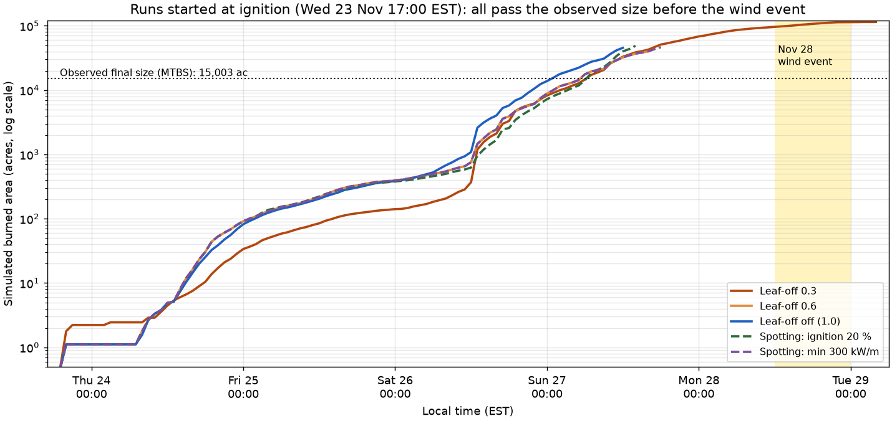<figcaption>Burned area (log scale) for runs started at ignition. The jump on Saturday 26 Nov follows a sharp dry-out (1-hr moisture about 17 % to 5 %).</figcaption></figure>
  <div class="col"><div class="tbl"><table>
    <tr><th>Run (23 Nov start)</th><th>Stopped at</th><th class="n">Burned</th></tr>
    <tr><td>Leaf-off canopy 0.3</td><td>hour 131 (manually)</td><td class="n">114,598 ac</td></tr>
    <tr><td>Leaf-off canopy 0.6</td><td>hour 96 (manually)</td><td class="n">43,461 ac</td></tr>
    <tr><td>Leaf-off off (1.0)</td><td>hour 91, Sun 27 12:00</td><td class="n">45,414 ac</td></tr>
    <tr><td>Spotting: ignition probability 20 %</td><td>hour 93, Sun 27 14:00</td><td class="n">48,814 ac</td></tr>
    <tr><td>Spotting: min intensity 300 kW/m</td><td>hour 97, Sun 27 18:00</td><td class="n">46,474 ac</td></tr>
    <tr><td>Spotting: both</td><td>hour 93</td><td class="n">48,814 ac</td></tr>
  </table></div>
  <p class="note">The model has no firefighting and no smouldering. The real fire stayed small until 28 Nov while crews worked it; the model fire keeps spreading and runs away when the fuel dries on 26–27 Nov. Canopy and spotting changes made little difference.</p></div>
</section>

<section class="wide">
  <div class="col"><h2>Runs started before the wind event (27 Nov)</h2>
  <p>Start Sun 27 Nov 13:00 EST from the origin point, 34 hours to Mon 28 Nov 23:00 EST, spotting on. The spread-rate multiplier <code>adj</code> multiplies the Rothermel surface spread rate everywhere.</p>
  <div class="tbl"><table>
    <tr><th>Run</th><th class="n">Burned</th><th class="n">Overlap</th><th class="n">Sørensen</th><th class="n">Hit rate</th><th class="n">Run time</th></tr>
    <tr class="obs"><td>Observed (MTBS)</td><td class="n">15,002 ac</td><td></td><td></td><td></td><td></td></tr>
    <tr><td><code>adj = 1</code></td><td class="n">475 ac</td><td class="n">419 ac</td><td class="n">0.054</td><td class="n">3 %</td><td class="n">4 min</td></tr>
    <tr><td><code>adj = 2</code></td><td class="n">3,805 ac</td><td class="n">2,903 ac</td><td class="n">0.309</td><td class="n">19 %</td><td class="n">about 22 min</td></tr>
    <tr class="best"><td><code>adj = 4</code></td><td class="n">15,766 ac</td><td class="n">7,366 ac</td><td class="n">0.479</td><td class="n">49 %</td><td class="n">31 min</td></tr>
    <tr><td><code>adj = 8</code> (stopped)</td><td class="n">&gt; 37,800 ac</td><td></td><td></td><td></td><td></td></tr>
  </table></div>
  <p>Sørensen = 2 × overlap / (observed + simulated); 1 is a perfect match. Hit rate = share of the observed area that the model burned.</p></div>
  <div class="maps">
    <figure>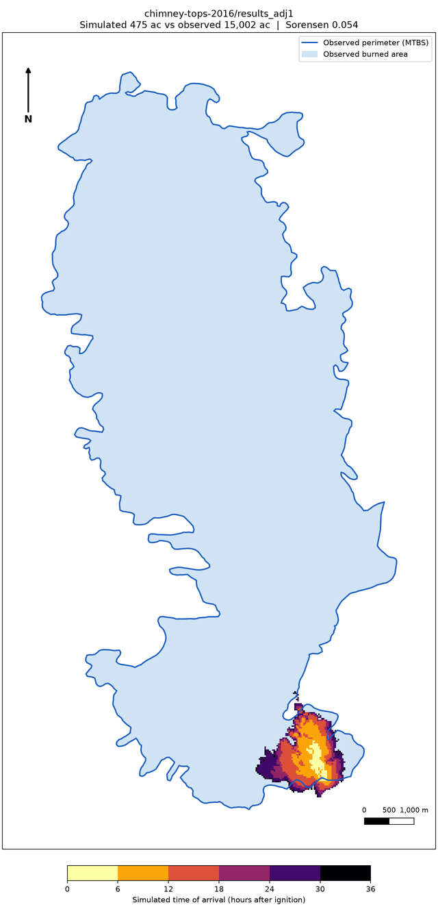<figcaption><strong>adj = 1</strong> · 475 ac · 0.054</figcaption></figure>
    <figure>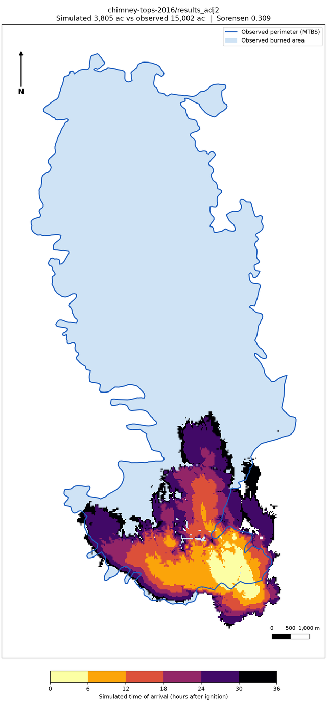<figcaption><strong>adj = 2</strong> · 3,805 ac · 0.309</figcaption></figure>
    <figure>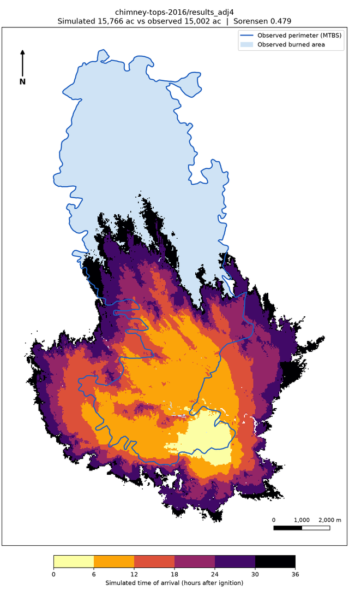<figcaption><strong>adj = 4</strong> · 15,766 ac · 0.479</figcaption></figure>
  </div>
  <div class="col"><p class="note">Blue outline: MTBS perimeter. Colours: simulated time of arrival. With <code>adj = 4</code> the area matches, but the model fire reaches 8.9 km north (observed 13.9 km), 2.9 km south (observed 0.8 km) and 4.0 km east (observed 1.5 km).</p></div>
</section>

<section class="wide">
  <div class="col"><h2>Is it slope or wind?</h2>
  <p>The <code>adj = 4</code> run was repeated twice with one factor removed: once with slope set to 0 (flat), once with wind speed set to 0.</p>
  <div class="tbl"><table>
    <tr><th>Run</th><th class="n">Acres</th><th class="n">Sørensen</th><th class="n">N km</th><th class="n">S km</th><th class="n">W km</th><th class="n">E km</th><th class="n">Length / width</th><th class="n">Below 900 m</th></tr>
    <tr class="obs"><td>Observed (MTBS)</td><td class="n">15,002</td><td></td><td class="n">13.9</td><td class="n">0.8</td><td class="n">5.6</td><td class="n">1.5</td><td class="n">2.08</td><td class="n">74 %</td></tr>
    <tr><td>Slope + wind (<code>adj = 4</code>)</td><td class="n">15,766</td><td class="n">0.479</td><td class="n">8.9</td><td class="n">2.9</td><td class="n">6.7</td><td class="n">4.0</td><td class="n">1.10</td><td class="n">32 %</td></tr>
    <tr><td>Flat: wind only</td><td class="n">2,723</td><td class="n">0.252</td><td class="n">4.7</td><td class="n">0.8</td><td class="n">2.5</td><td class="n">1.1</td><td class="n">1.51</td><td class="n">8 %</td></tr>
    <tr><td>No wind: slope only</td><td class="n">1,376</td><td class="n">0.081</td><td class="n">1.1</td><td class="n">2.2</td><td class="n">2.1</td><td class="n">1.4</td><td class="n">0.97</td><td class="n">0 %</td></tr>
  </table></div></div>
  <div class="maps">
    <figure>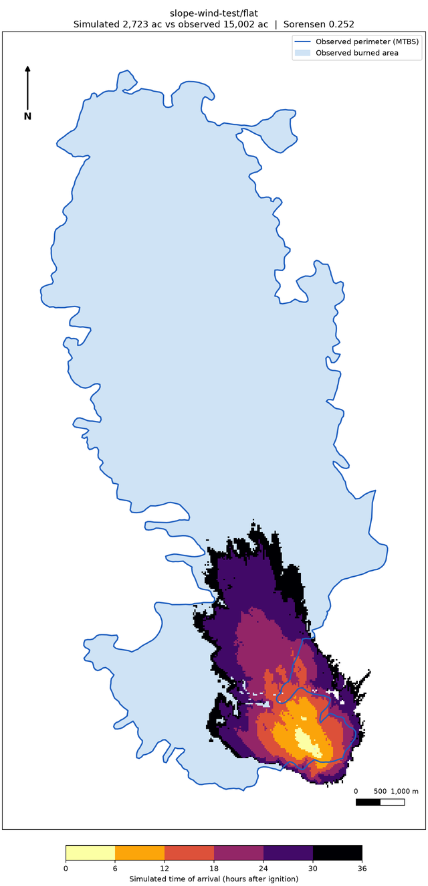<figcaption><strong>Flat (wind only)</strong> · right direction, too short</figcaption></figure>
    <figure>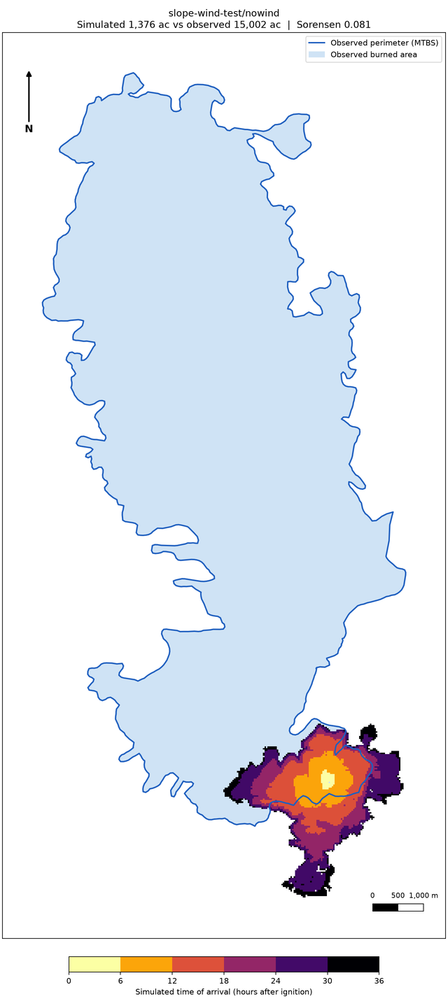<figcaption><strong>No wind (slope only)</strong> · round, uphill, wrong direction</figcaption></figure>
    <figure><figcaption><strong>Both (reference)</strong> · big, broad blob</figcaption></figure>
  </div>
  <div class="col"><p class="fix">Wind alone gives the right direction and the right southern and eastern edges, but only 4.7 of 13.9 km north. Slope alone spreads uphill, south and west. Together they reinforce each other (2,723 + 1,376 ac separately, 15,766 ac together), so raising <code>adj</code> inflates the wrong-direction spread too.</p></div>
</section>

<section class="wide">
  <div class="col"><h2>Fuel moisture corrected with the station</h2>
  <p>Each hour, CloudFire <code>m1</code> and <code>m10</code> were multiplied over the whole domain by the ratio station / CloudFire at Indian Grave (factor 0.66–1.04, mean 0.88, about 12 % drier). Rain-wetted hours were left unchanged. Same setup as the 27 Nov runs.</p>
  <div class="tbl"><table>
    <tr><th><code>adj</code></th><th class="n">Without correction</th><th class="n">With correction</th><th class="n">Sørensen without</th><th class="n">Sørensen with</th></tr>
    <tr><td>1</td><td class="n">475 ac</td><td class="n">781 ac</td><td class="n">0.054</td><td class="n">0.088</td></tr>
    <tr><td>2</td><td class="n">3,805 ac</td><td class="n">4,188 ac</td><td class="n">0.309</td><td class="n">0.318</td></tr>
    <tr class="best"><td>4</td><td class="n">15,766 ac</td><td class="n">19,597 ac</td><td class="n">0.479</td><td class="n">0.491</td></tr>
  </table></div></div>
  <div class="maps">
    <figure>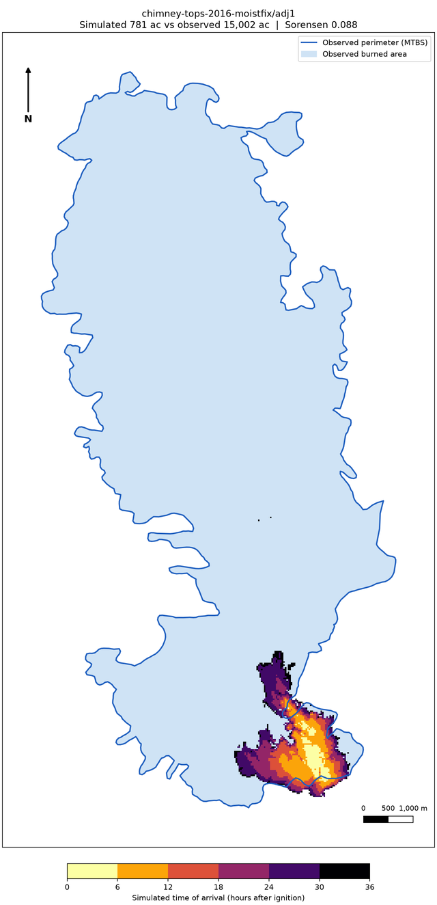<figcaption><strong>Corrected, adj = 1</strong> · 781 ac · 0.088</figcaption></figure>
    <figure>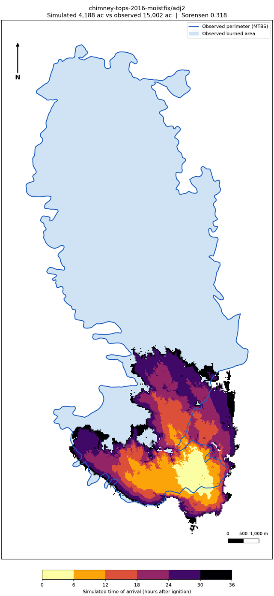<figcaption><strong>Corrected, adj = 2</strong> · 4,188 ac · 0.318</figcaption></figure>
    <figure>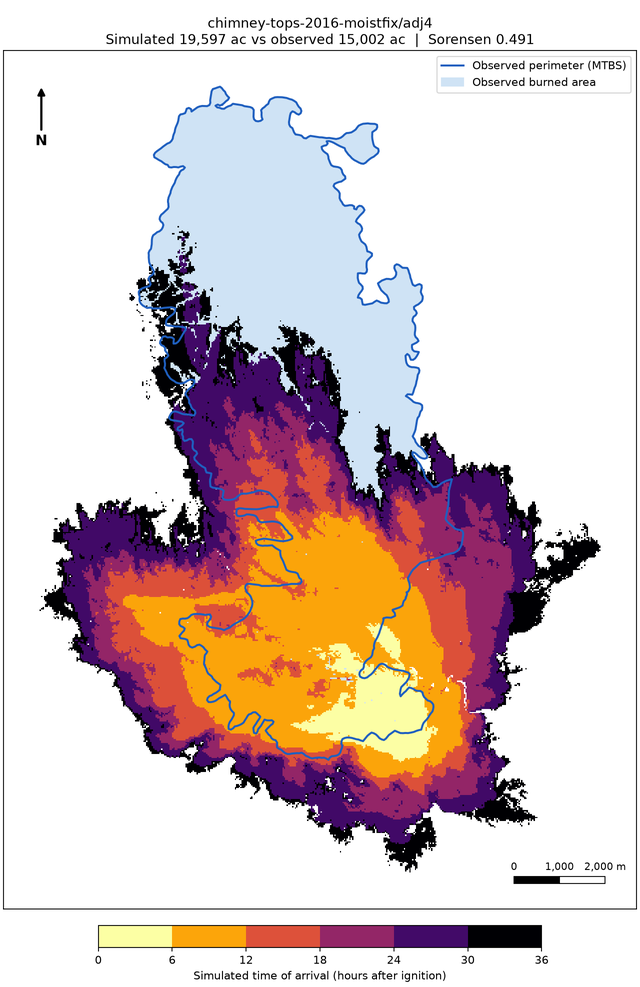<figcaption><strong>Corrected, adj = 4</strong> · 19,597 ac · 0.491</figcaption></figure>
  </div>
  <div class="col"><p class="note">With <code>adj = 4</code> the corrected run overshoots the area (19,597 vs 15,002 ac) and the hit rate rises to 57 %, but Sørensen only moves from 0.479 to 0.491. Drier fuel adds area but barely improves the match, because it speeds up spread in every direction, like <code>adj</code>. It does not fix the slope-driven spread or the weak northward run.</p></div>
</section>

<section class="col">
  <h2>What limits the match</h2>
  <div class="tbl"><table>
    <tr><th>Limitation</th><th>Effect</th></tr>
    <tr><td>Hourly 2.5 km wind (RTMA), no gusts or valley-scale downslope winds</td><td>Fire does not run 14 km north downhill into the valley</td></tr>
    <tr><td>Rothermel slope effect on steep ridges</td><td>Too much uphill spread south, east and west</td></tr>
    <tr><td>Gatlinburg is non-burnable urban fuel (code 91)</td><td>Fire cannot spread through or across town</td></tr>
    <tr><td>No firefighting or smouldering in the model</td><td>A 23 Nov start runs away days too early</td></tr>
    <tr><td>MTBS is the final perimeter (fire active to 22 Dec)</td><td>Some observed area may have burned after the simulated period</td></tr>
    <tr><td><code>adj</code> is a calibration factor</td><td>Matches the area but not the shape; report it as calibrated, not predicted</td></tr>
  </table></div>

  <h2>Possible next steps</h2>
  <ol>
    <li>Better wind for 28 Nov: HRRR (3 km) downscaled over terrain with WindNinja, or wind scaled up on flat terrain to see what speed carries the fire 14 km.</li>
    <li>Start from the fire's real perimeter on 27–28 Nov (NPS reports, NASA FIRMS hotspots) instead of a point.</li>
    <li>Turn on ELMFIRE's building/WUI model so Gatlinburg can burn.</li>
    <li>Compare with a perimeter from 29 Nov if one exists, not only the final MTBS boundary.</li>
  </ol>

  <h2>Files</h2>
  <ul class="files">
    <li>chimney-tops-2016/ · 27 Nov runs (results_adj1, results_adj2, results_adj4)</li>
    <li>chimney-tops-2016-nov23/ · 23 Nov runs (results_leafoff*)</li>
    <li>spotting-test/ · spotting variants</li>
    <li>slope-wind-test/flat, slope-wind-test/nowind · experiments</li>
    <li>chimney-tops-2016-moistfix/adj1, adj2, adj4 · moisture-corrected runs</li>
    <li>weather_stations/ · IGGT1 and KGKT data, comparison plots</li>
    <li>Scripts: compare_perimeter.py, compare_station.py, compare_wind_stations.py, correct_moisture.py, plot_spread.py, plot_data_flow.py</li>
  </ul>
</section>
</main>

<footer class="col">
  Sources: <a href="https://www.nps.gov/grsm/learn/chimney-tops-2-fire.htm">NPS Chimney Tops 2 Fire</a> · <a href="https://en.wikipedia.org/wiki/2016_Great_Smoky_Mountains_wildfires">Wikipedia</a> · <a href="https://wildfiretoday.com/analyzing-the-fire-that-burned-into-gatlinburg/">Wildfire Today</a> · <a href="https://arxiv.org/html/2609.36315">PyroStack (arXiv)</a> · MTBS burn boundary · Synoptic Data (IGGT1, KGKT).
</footer>
